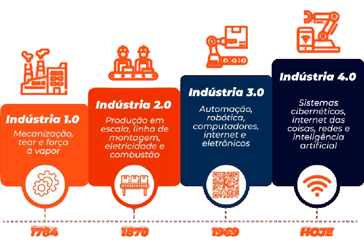

Automação x Desemprego
O pioneiro da automação, como a conhecemos hoje, teve seu surgimento na revolução industrial com o uso de carvão como combustível para máquinas de vapor e locomotivas. A mecanização trouxe consigo grandes mudanças, desde a agilização do trabalho e produções mais dinâmicas como também o aperfeiçoamento de alguns serviços. Anos depois, o avanço tecnológico proporcionou máquinas e programas que são capazes de executar ações com exatidão, gerando, por consequência, um ambiente de desemprego para determinados ofícios que não mais dependem do trabalho humano, porém, traz menos custos e mais lucros para empresas e estabelecimentos. Tal tema é de extrema importância pois, desde a revolução industrial o uso da tecnologia vem sendo cada vez mais presente em nosso cotidiano e seu desenvolvimento gera grandes impactos no mercado de trabalho, trazendo a necessidade de adaptações, por exemplo a extinção de alguns ofícios e o surgimento de novas oportunidades de emprego.
Esta problemática é dialogada desde seu surgimento na revolução industrial, entretanto, na contemporaneidade vem sendo cada vez mais realizado debates a respeito do assunto, afinal, ele tem um impacto imenso sobre as carreiras do futuro, trazendo a demanda de mudanças.
A conexão entre emprego e tecnologia é alvo de discussões e preocupa economistas. O mercado de trabalho está diretamente ligado a ferramentas de otimização de tempo e produção, mas de acordo com o ex-secretário de Estado do Ministério Federal do Trabalho e Assuntos Sociais alemão, Bernhard Jogoda, é mencionado que, com base em antecedentes históricos, é irrefutável que as inovações tecnológicas carregam com si duas características essenciais: 1-a substituição do emprego e 2-o crescimento econômico.
Segundo a Universidade de Oxford, 47% dos postos de trabalho correm risco de automatização até o ano de 2024, carreiras de advogados, médicos e até mesmo contadores são exemplos, pois, robôs são capazes de realizá-las com precisão. Para IFTF (Institute For The Future) em uma pesquisa para a Dell Technologies, estimou-se que 85% dos postos de trabalho que existirão em 2030 ainda não foram criados hoje. Entretanto, construção de novos campos de atuação exige diferentes qualificações e soft skills.
Atualmente não foi desenvolvido um conceito único ou solução para essa problemática, o que demonstra a importância de proporcionar mais estudo e debates a respeito do assunto.
É inegável que a revolução industrial e modernização tem se tornado um elemento interessante para a indústria que, inseridas no meio capitalista, priorizam sua margem de lucro. No conceito de quarta revolução industrial (Indústria 4.0) proposto por Zawadzki e Zywicki (2006) esclarece que esse modelo é a combinação de conquistas tecnológicas que aconteceram nos últimos anos, com a visão de um futuro com sistemas de produção inteligente. Diante de um mundo globalizado e acelerado se faz indispensável a preparação dos trabalhadores para que sempre estejam atualizados e atentos ao mundo da tecnologia e, cada vez mais, se mostra necessário o conhecimento sobre o âmbito de TI para lidar com outras áreas do mercado de trabalho e estar alinhado a possíveis mudanças.
Existem máquinas programadas para praticar variadas funções repetitivamente e não necessitam de instruções específicas, as soft skills que são procuradas nos homens podem ser efetuadas por algoritmos.
Durante as décadas de 1940 e 1950 a agricultura também sentiu o impacto da inserção tecnológica em seu meio, afinal, a mão de obra foi reduzida em 26%. Em 1960, 40% de força de trabalho foi substituída por máquinas e nessa mesma década a produtividade agrícola bateu recorde, aumentando mais sua produção do que nos últimos 100 anos.
Indústria 4.0 
A quarta revolução industrial (Indústria 4.0), segundo Klaus Schwab, é um termo utilizado para se referir as tecnologias, automação e troca de dados, esses avanços são responsáveis pela robótica, inteligência artificial e assuntos voltados a computação que são capazes de mudar os modelos de produção e negócios, tanto no Brasil como no mundo.
Esta indústria é marcada pela produtividade e flexibilidade, abrangendo diferentes esferas, seja na política, econômica ou empresarial, ela abre portas para múltiplas possibilidades de abordagem, um turbilhão de inovação gera impactos na vida do trabalhador e seu emprego. No parâmetro das industriais, tais avanços da indústria 4.0 trazem otimização do tempo de produção e eficácia, mas põe em cheque a necessidade da mão de obra humana, cada vez mais os profissionais precisam aperfeiçoar suas competências e capacidades, além de ampliar o conhecimento sobre a tecnologia e suas alterações, para que possam garantir a empregabilidade, atualmente as empresas prezam por funcionários que dominem, pelo menos em algum grau, a tecnologia, pois este é o futuro que guia os demais ofícios e os modifica conforme progride.
O potencial da reformulação do modelo de trabalho, que agora integra homem e tecnologia, caminha para um futuro onde é necessário aplicar o conhecimento a respeito da TI desde cedo no ensino e nos cursos profissionalizantes, para formar pessoas que possam ingressar no mercado de trabalho com conhecimento prévio da tecnologia e como usá-la de maneira adequada e coerente.
Futuro do Trabalho
Não existe uma solução definitiva para o desemprego causado pela automação e substituição do trabalho humano. O tema que envolve a tecnologia da automação e as profissões existentes hoje é contemporâneo e amplo, ainda se faz necessário realizar mais pesquisas e estudos para que se possa pensar em métodos de amenizar os impactos da automação através de políticas e iniciativas que visem auxiliar o trabalhador.
Software inteligentes que entendem falas e instruções, além de fazer tarefas são o que inauguram nossa era digital. Um estudo do economista Bruno Ottoni e do matemático Paulo Rocha Oliveira prevê que cerca de 58,1% dos brasileiros estão com suas profissões em risco. Embora, a automação exija não só a verificação da produção em larga escala e rendimentos, como também é preciso se atentar ao custo dessa implantação, contudo, o avanço tecnológico dita os caminhos do mercado de trabalho mundial. Por exemplo, foi desenvolvido pela universidade de Johns Hopkins em 2016, o Smart Tissue Autônomo Robot (STAR), um equipamento com câmeras e diversos sensores que pode procurar em seu banco de dados as melhores técnicas para serem utilizadas em operações médicas.
A palavra que melhor define o momento atual que vivemos é “velocidade”, a tecnologia proporcionou uma sociedade conectada, a informação sobre o mundo é abundante e circula de modo acessível à população, trazendo à tona desafios de desemprego, como também, emergindo oportunidades de empregabilidade. O ser humano possui por natureza o pensamento crítico para solucionar problemas impostos, e mais do que nunca é importantíssimo desenvolver essa capacidade de discernimento para ter a competência de saber como usar a tecnologia para facilitar e melhorar a qualidade de vida humana, não para destruí-la. Procurar expandir os horizontes e ter mente aberta para abraçar, aprender e se moldar perante o progresso do planeja é a parte complexa e central da questão acerca do debate, até porque a prosperidade tecnológica é inevitável. Quando um ambiente de trabalho sofre transição para novas realidades ele exige maior sofisticação de seus agentes, ou seja, trabalhadores, o sucesso que decide quem permanece na vaga permeia o entendimento de que sempre se tem algo para aprender, mostrando que adaptabilidade é uma soft skill indispensável.
Realizou-se inúmeros estudos acerca desta problemática que envolve a área das carreiras e tecnologia, a questão a ser debatia é o quanto este avanço tecnológico prejudica ou beneficia as profissões.
Jovens no Mercado de Trabalho
O mercado de trabalho atual é mutável e está em constante movimento, exigindo que a sociedade e seus trabalhadores acompanhem seu progresso, ainda mais no que diz respeito ao surgimento de novas tecnologias que traz a necessidade de maior qualificação dos funcionários contratados nas empresas, fator que nos leva ao primeiro ponto: Pessoas experientes competindo com recém-formados que desejam se qualificar para ter seu primeiro emprego. Apesar de que o avanço tecnológico também ocasiona desemprego, ele expande os horizontes para novas formas de empregabilidade, isto significa a seleção de profissionais com alta competência e flexibilidade que atendam a essas demandas.
A combinação do excesso de requisitos, escolaridade, experiência e conhecimentos na área cobrado pelas empresas no momento do recrutamento para a vaga, gera o grande obstáculo para os jovens, dados da Pesquisa Nacional por Amostras de Domicílios Continua Mensal (PNAD Continua) divulgado pelo Instituto Brasileiro de Geografia e Estatística (IBGE, 2020) demonstram que no terceiro trimestre de 2020 a taxa de desemprego entre jovens de 18 a 24 anos atingiu recorde de 31,4%, por conta disso é crucial desenvolver algumas habilidades ao longo dos anos da formação escolar: “Capacidade de resolução de problemas, de análise crítica, de inovação, de adaptação e cooperação.”
Analisando dados da Organização Internacional do Trabalho (OIT), a estimativa é que o desemprego global no ano de 2022, chegou a 207 milhões, índices altíssimos revelando o cenário conturbado que se estende até dos dias de hoje, outro agente decisivo para ingressar no primeiro emprego é o domínio da língua inglesa, que por questões de escolaridade e/ou baixa renda para realizar cursos de inglês acaba resultando em poucos jovens que possuem esse conhecimento, determinando quem mais se destaca para a vaga oferecida. Podemos, com base nessas informações, afirmar que o mercado de trabalho atual é rigoroso em suas exigências e os jovens são os mais afetados pela falta de experiência, conhecimento na área e na língua inglesa, enfrentando adversidades no caminho do primeiro emprego, ainda sem uma solução definitiva para a problemática.
Sendo assim, conclui-se que o progresso do desenvolvimento tecnológico e da Inteligência Artificial (IA) acompanham e, sempre andará lado a lado, com o mundo do trabalho, afetando seus trabalhadores, mas isso não é necessariamente apenas uma perspectiva negativa, afinal, ao mesmo tempo que a tecnologia fecha portas por substituir alguns ofícios humanos ela também traz à tona novas oportunidades únicas e inovadores de atuação no mercado de trabalho, podemos observar e notar tanto seus pontos positivos quanto seus pontos negativos que rondam a questão do desemprego no futuro. Conforme o cenário se modifica, ele exige cada vez mais por profissionais conpetentes que estejam atentos ao assunto e busquem ter algum conhecimento em TI, para que seja possível se adaptar a mudanças que seu cargo possa exijir, a tecnlogia vem para auxiliar na execução de tarefas e pode ser usada a favor de funcionários e empresas, desde que todos tenham consciência a respeito do tema e saibam lidar com ele.
Portanto, é crucial que os trabalhadores tenham acesso a educação para desenvolver uma formação apropriada para possíveis recolocações aos novos cargos exigidos pelas novas tecnologias do futuro. Profissionais com alta flexibilização e capacidade de adaptação serão os que vão se destacar frente a essa realidade.
Leia as referências e informe-se mais:
Amorim; Helena. Aguiar; Raphael. Desemprego Tecnológico: O Impacto Das Novas Tecnologias No Mercado De Trabalho. Janeiro de 2022. Disponível em: https://senacrsedu.sharepoint.com/:b:/s/2023SAOLEOTURMA2AMANHAGV5475/EcCHDQnOGr9MilrAXrabdEYB3uZkjLBjqyAfgKG-SY-dUA?e=gIP0BK . Acesso em: 10 jul. 2024.
Araújo; Fábia. A Inteligência Artificial E Os Seus Impactos No Mundo Do Trabalho. Em 2020. Disponível em: https://senacrsedu.sharepoint.com/:b:/s/2023SAOLEOTURMA2AMANHAGV5475/ETDCLmm7g71Kl0VSq1F1pgoB6Edwzj2E-WxY3rWdgcPlTw?e=w4P7sh . Acesso em: 10 jul. 2024.
Fontenelle; Mariela. Motivações Para A Transição De Carreira Na Área De Tecnologia Da Informação. Janeiro de 2016. Disponível em: https://senacrsedu.sharepoint.com/:b:/s/2023SAOLEOTURMA2AMANHAGV5475/EVRwK7B0mhlHm9bUaUw4M6IBK9b4Q0he28a8iitTHg08CA?e=fIQMEl . Acesso em: 10 jul. 2024.
Gabriel; Martha. O Futuro do Trabalho. Dezembro de 2023. Disponível em: https://revistas.belasartes.br/arte21/article/view/64/62 . Acesso em: 10 jul. 2024.
Rodrigues; Veridiana. Dificuldades Dos Jovens No Mercado De Trabalho: O Primeiro Emprego. 2022. Disponível em: http://ric.cps.sp.gov.br/bitstream/123456789/11066/1/TCC-%20DIFICULDADES%20DOS%20JOVENS%20NO%20MERCADO%20DE%20TRABALHO-2022.pdf . Acesso em: 13 jul. 2024.
Serépicos; Beatriz. Profissões Do Futuro. Maio/Agosto de 2021. Disponível em: https://senacrsedu.sharepoint.com/:b:/s/2023SAOLEOTURMA2AMANHAGV5475/EUgAN1pkgBxPt-FhZNGl7MgBi9-we2fOJVX5tpJl6xxr-w?e=wL3l9f . Acesso em: 10 jul. 2024.
Tessarini; Geraldo. Saltorato; Patrícia. Impactos Da Indústria 4.0 Na Organização Do Trabalho: Uma Revisão Sistemática Da Literatura. Junho de 2018. Disponível em: https://www.producaoonline.org.br/rpo/article/view/2967/1678 . Acesso em: 10 jul. 2024.
Zarias; Alexandre. Evangelista; Rafael. O Mundo Do Trabalho Em Mutação: Profissões Deixam De Existir, Novas Funções São Criadas. Janeiro/Março de 2004. Disponível em: https://senacrsedu.sharepoint.com/:b:/s/2023SAOLEOTURMA2AMANHAGV5475/EQOlMFAq7N9JsIQhAI9hVdUBCwmu_kjA8c_6FnHqkZsbeQ?e=lJOMrl . Acesso em: 10 jul. 2024.
CUTBRASIL. Taxa de desemprego entre jovens bate novo recorde e chega a 31,4%, segundo IBGE. CUTBRASIL, 30 nov. 2020. Disponível em: https://www.cut.org.br/noticias/taxa-de-desemprego-entre-jovens-bate-novo-recorde-e-chega-a-31-4-segundo-ibge-dcaa. Acesso em: 4 ago. 2024.